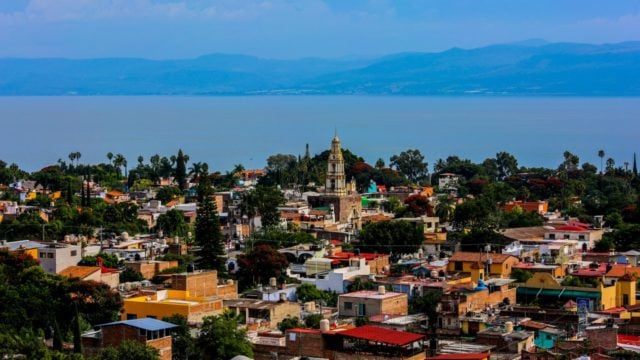
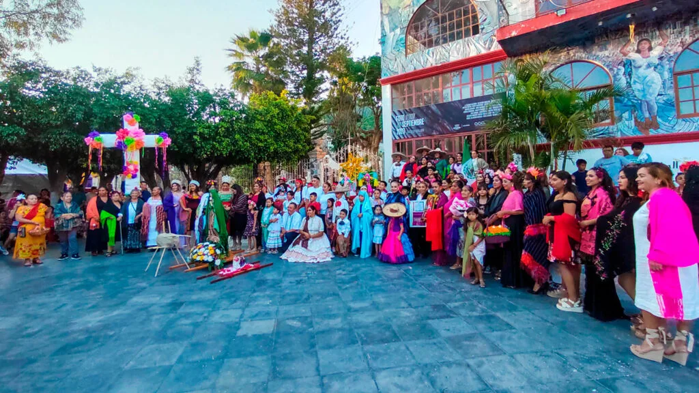
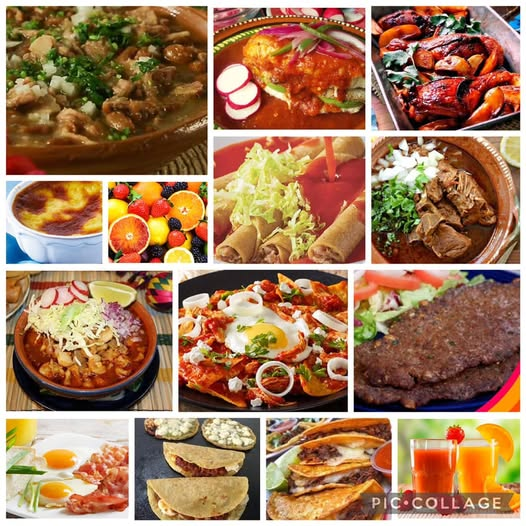
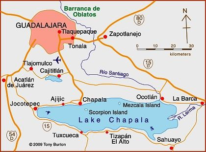
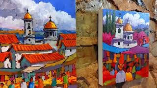

Ajijic es un encantador pueblo magico ubicado en la ribera del Lago de Chapala, en Jalisco, Mexico. Es conocido por su clima agradable, paisajes hermosos y su vibrante comunidad artistica.
• *Fiestas Patronales*: La fiesta en honor a San Andres, el patron del pueblo, es una de las celebraciones mas importantes. Incluye procesiones, musica, danzas y actividades religiosas. • *Dia de Muertos*: Como en muchas partes de Mexico, esta celebracion es muy significativa. Los habitantes decoran altares con ofrendas para honrar a sus seres queridos fallecidos. • *Posadas*: Durante la temporada navideña, se realizan posadas que representan el viaje de Maria y Jose. Estas incluyen cantos, rezos y, al final, piñatas. • *Carnaval*: La celebracion del Carnaval es vibrante, con desfiles, disfraces y musica. Es un momento de alegria y diversion para la comunidad. • *Mercados de Artesania*: Los mercados locales son un punto de encuentro para la compra de artesanias, donde se pueden encontrar productos hechos a mano que reflejan la cultura local.
• *Pozole*: Un platillo tradicional hecho a base de maiz hominy, carne (generalmente cerdo o pollo) y especias, servido con rabanos, lechuga, cebolla y chile en polvo. • *Tacos de Carne Asada*: Tortillas rellenas de carne asada, acompañadas de cebolla, cilantro y salsas diversas. Son un favorito entre locales y visitantes. • *Birria*: Un guiso de carne (usualmente de chivo o res) marinado y cocido a fuego lento, servido con tortillas y salsas. • *Tamales*: Hechos de masa de maiz rellena de carne, chiles o frutas, y envueltos en hojas de maiz. Son populares en festividades y reuniones familiares. • *Atoles*: Bebidas calientes a base de masa de maiz, que pueden ser dulces o saladas. El atole de elote es especialmente popular. • *Sopes*: Tortillas gruesas con los bordes doblados, cubiertas con frijoles, carne, lechuga, crema y salsa. • *Chiles en Nogada*: Este platillo, que combina chiles poblanos rellenos de picadillo y una salsa de nuez, es tipico en celebraciones.
Ajijic se encuentra en el municipio de Chapala, en el estado de Jalisco, Mexico. Esta situado a la orilla del Lago de Chapala, el lago mas grande de Mexico. • *Distancia de Guadalajara*: Aproximadamente a 40 minutos (unos 50 km) al sur de Guadalajara, la segunda ciudad mas grande del pais. • *Acceso*: Es facilmente accesible por carretera y ofrece hermosos paisajes montañosos y vistas al lago. Esta ubicacion privilegiada lo convierte en un destino popular tanto para turistas como para residentes que buscan un lugar tranquilo y pintoresco.
Ajijic es conocido por su vibrante comunidad artistica y cuenta con varias galerias que exhiben obras de artistas locales y regionales. Aqui te menciono algunas de las mas destacadas: • *Galeria de Arte Ajijic*: Esta galeria presenta obras de artistas contemporaneos, incluyendo pinturas, esculturas y artesania. Es un lugar ideal para explorar el talento local. • *Galeria de Arte de la Ribera*: Ofrece una amplia variedad de obras, desde arte tradicional hasta moderno. Es un espacio que promueve el arte y la cultura de la region. • *Centro Cultural Ajijic*: No solo es una galeria, sino tambien un espacio para talleres, exposiciones y eventos culturales. Aqui puedes encontrar arte y participar en actividades artisticas. • *Galeria de Arte de Patricia*: Especializada en pintura contemporanea, esta galeria presenta obras de artistas emergentes y consolidados. • *Mercados de Artesania*: Aunque no son galerias en sí, los mercados locales también ofrecen una variedad de artesanias y obras de arte, donde puedes conocer a los artistas y comprar piezas unicas. Estas galerias y espacios artisticos hacen de Ajijic un lugar fascinante para los amantes del arte y la cultura.
